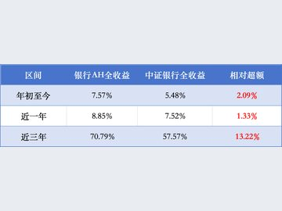

03
推动存量政策与增量政策协同发力——国家发展改革委解读经济社会热点
如何看待前三季度经济运行态势？因地制宜发展新质生产力要把握哪些重点？围绕经济社会热点问题，国家发展改革委20日举行新闻发布会，有关负责人进行深入分析解读。

新华社北京10月19日电（记者 吴雨、潘禹杰）中国人民银行行长潘功胜10月19日在2026金融街论坛年会开幕式上宣布，将出台多项政策举措。
10月19日，中国人民银行行长潘功胜在2026金融街论坛年会开幕式上集中披露了一系列央行即将出台的政策举措，包括将会同金融监管总局…
如何看待前三季度经济运行态势？因地制宜发展新质生产力要把握哪些重点？围绕经济社会热点问题，国家发展改革委20日举行新闻发布会，有关负责人进行深入分析解读。
随着新质生产力加快发展，金融如何更好助力科技创新和产业创新深度融合正变得愈发迫切。近日，中共中央、国务院印发《关于发展新质生产力的意见》（以下简称《意见》）…
10月19日盘中，工商银行股价再创历史新高，报8.6元，上涨1.42%，总市值约3.02万亿元，居 A股第一。

人民财讯10月19日电，10月19日，金融监管总局局长丁向群参加2026金融街论坛年会开幕式时表示，今年前三季度…
近日，位于鞍山市台安县的鞍山银龙丹克100MW独立混合储能EPC项目现场喜讯传来，项目综合楼主体结构完成封顶，标志着项目土建施工取得关键性节点突破…
这些“超级充电宝”，存的是电，稳的是网，蓄的是辽宁绿色转型的“势能”。随着“风光火核储”一体化能源基地加快建设，辽宁不仅将重塑能源版图…

阳光油砂(02012)发布公告，于2026年10月20日(香港及阿尔伯塔省卡尔加里时间)，阳光油砂有限公司(阳光或本公司)的子公司…

10月19日，中国人民银行行长潘功胜在2026金融街论坛年会上，宣布了人民银行即将出台的几项政策举措，包括将会同金融监管总局…